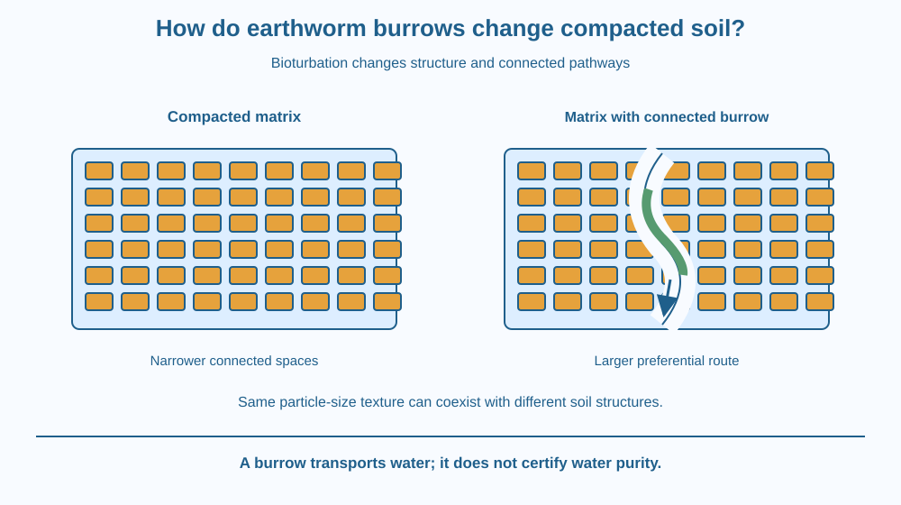

Explain how earthworm activity can change the physical arrangement of soil. Identify burrows, casts and bioturbation. Predict possible effects on water and air pathways while recognising that earthworm species, soil conditions and management affect the outcome.
A compacted soil sample may admit water slowly, while a nearby patch with visible channels behaves differently. One difference could be the activity of soil animals. Earthworms do more than sit among soil grains: they can move through material, leave channels and deposit processed soil.
Why might one continuous channel matter even if the soil's mineral particle sizes stay the same? The answer concerns structure, the arrangement of particles and spaces, rather than texture alone.
A burrow can change a pathway without changing clay into sand.
Soil structure describes how particles are arranged into groups and how spaces connect between them. Compaction generally presses particles closer together and can reduce larger connected pores. This can affect both water movement and air exchange.
Earthworms can move through soil and create or maintain burrows. Their actions push, loosen or transport material locally. The resulting channel can provide a pathway different from the much narrower spaces within the surrounding soil matrix.
Mixing and rearrangement of soil by living organisms is called bioturbation. Earthworms are one contributor, not the only one. Roots, other animals and human activities also influence the structure of the soil.
Earthworm feeding and movement can produce casts, deposited material that has passed through the animal. Casts and the surrounding activity can influence aggregates and local pore arrangement. Their effect depends on the soil, species and conditions rather than one universal recipe.
A connected burrow may allow water to move into deeper regions more quickly than it would through nearby fine pores. This is sometimes called preferential flow: water follows an easier route rather than spreading evenly through every small space.
Faster movement is not automatically beneficial in every respect. Water may bypass some soil that would otherwise store it, and dissolved substances may move along the same pathway. A burrow is not a purification system that removes all contaminants from water.
Air can also move through connected spaces when they are not water-filled. Root conditions depend on both water and oxygen availability. A system with useful large pathways and water-holding smaller pores can behave differently from a uniformly compressed sample.
Earthworms vary in where they live and how they burrow. Some work mainly near surface litter; others create different channel systems. Introducing an unfamiliar species is not a safe universal soil-improvement method. The lesson explains mechanisms of organisms already present, not a recommendation to move earthworms between habitats.
Draw many tightly arranged soil particles with narrow gaps. Then add a continuous channel through the drawing. Trace two water routes: one winding through the fine spaces and one travelling along the new channel.
Do not erase all the smaller pores. The burrow creates an additional pathway within a larger structure. The surrounding material can still hold water differently from the channel.
Next add a cast-shaped cluster near the channel and label it rearranged material. This model captures both movement through space and deposition of material. It deliberately omits digestive details, because today's explanation concerns the resulting soil structure.
The SVG contrasts a compacted matrix with a matrix containing a continuous burrow. Blue arrows show water using the larger channel, while smaller arrows indicate movement through the surrounding pores.
A simple earthworm outline sits inside part of the channel. A separate cast symbol identifies deposited material without pretending that every cast has the same shape or composition. The labels distinguish texture from structure.
The comparison is schematic. It does not promise that one worm will drain a pot within a particular time or that every channel is connected all the way through a soil sample.

Gardeners may notice earthworm channels and casts after suitable weather. These observations suggest biological activity, but counting a few visible worms is not a complete soil-health assessment. Many other conditions and organisms contribute to soil functioning.
A heavily walked school path can differ from a nearby planted bed even where their mineral texture is similar. Differences in compaction, roots and animal channels can help explain why texture alone did not predict their behaviour.
Earthworms should not be collected from one place and released elsewhere for this lesson. Moving organisms can alter ecosystems, and an unfamiliar garden product or species should not be assumed suitable for every Indian landscape.
Use paper, a pencil and a blue marker. Do not dig for worms or pour water onto an animal.
Ask a partner to explain why the mineral particles remain the same sizes even though movement pathways differ. The model is a structural comparison, not a measurement of infiltration or proof that every burrow has the same effect. Use observation photographs if an adult already has suitable examples.
Suppose a burrow ends inside the sample rather than connecting to an outlet or deeper pathway. Would its effect necessarily match that of a continuous channel?
Now imagine the channel is completely water-filled. How might its role in air exchange differ from that of an air-filled channel? These cases show why a visible hole alone does not specify every aspect of how a soil transports fluids.
What is bioturbation?
Answer: B — Bioturbation describes biological mixing and rearrangement of soil materials.
Why can a connected earthworm burrow affect water movement?
Answer: C — A continuous channel can carry water differently from the fine-pored matrix around it.
Water travels rapidly down a burrow. What should you avoid assuming?
Answer: A — Rapid transport through a channel does not guarantee removal of contaminants.
Prepare a comparison of two soils with the same stated texture but different structure. Give one a compressed arrangement and the other connected biological channels.
Explain a possible benefit and one limitation of rapid flow through a channel. Your answer must not call the burrow a filter that makes water safe, and it must not recommend introducing a new earthworm species. Focus on the physical pathways and what they allow to move.
A small number of connected large pathways can strongly influence where water goes, even when much of the soil remains fine-pored. A sample's behaviour therefore depends on the arrangement and connections of spaces, not just on an average particle size or a count of visible holes.
Earthworm activity can rearrange soil and create connected burrows, changing water and air routes without changing the soil's mineral texture.